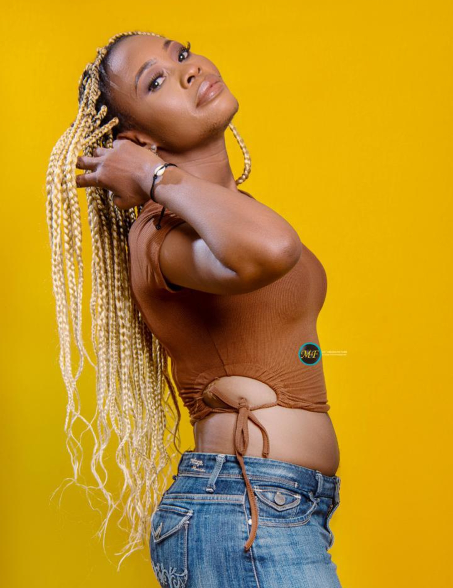

🎬 Portrait de Pondi Rachel Eugénie Flore – Une Voix du Cinéma Camerounais
Nom complet : Pondi Rachel Eugénie Flore
Date de naissance : 16 septembre 1990
Nationalité : Camerounaise
Ville de naissance : Makak, Cameroun
Résidence actuelle : Yaoundé
🎭 Une artiste forgée par la passion
Rachel débute en 2022 dans le film Déchéance réalisé par Emmanuel Mabou, où elle incarne un agent des affaires sociales. Une première expérience marquante qui révèle son potentiel artistique.
Depuis, elle enchaîne des participations dans plusieurs courts-métrages, notamment une comédie sur les Lions Indomptables du Cameroun et un film sur la Saint-Valentin réalisé par Armel Nde. Ces expériences lui ont confirmé sa vocation d’actrice.
🎬 Rôle dans “Héritiers”
Dans la série Héritiers, elle interprète Rachel, une femme trahie mais déterminée, luttant pour l’avenir de ses enfants. Un rôle puissant et émotionnel qu’elle incarne avec justesse.
“J'aime ce personnage de Rachel, cette femme très déterminée, forte et courageuse.”
🎤 Sa vision du cinéma
Pour Rachel, le cinéma est une révélation personnelle et sociale. Il lui permet d’exprimer ce qu’elle garde au fond d’elle-même, au service d’un art qu’elle considère comme un outil de vérité.
“Le cinéma me permet de dire ce que je garde au fond de moi… N'étant pas très bavarde, je le fais dans ce personnage.”
💬 Message au public
“De croire en moi, en nous, de nous soutenir comme ils le font déjà depuis 2022. Nous n’allons pas les décevoir. On a besoin d’eux.”
Et aux jeunes artistes : “Continuez de croire en vous, travaillez dur… L’argent et le succès vous trouveront sur ce chemin. Ne baissez jamais les bras.”
Planète Africa est fier de l'accompagner dans ce parcours inspirant.